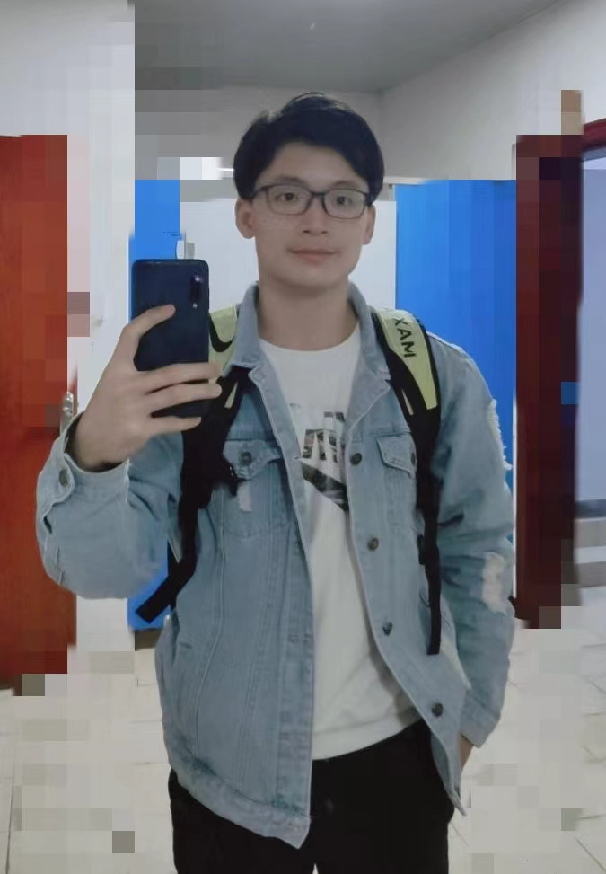
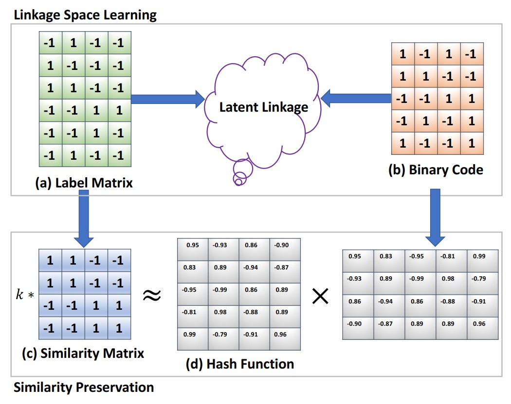

|
I am a Researcher at Tencent Youtu Lab, where I work on computer vision and machine learning. And my research interests are deepfake detection, face anti-spoofing and image retrieval. I finished the master's study and obtained my M.S. degree from Xiamen University in 2022, advised by Prof. Rongrong Ji. Earlier, I received the B.S.degree from Fuzhou University in 2018.
Email / Google Scholar / Github / |
 |
{kind=link}
Recent news
-
07/2023 – Our Team won the second place in Deepfake Video Generation Methods Identify Track (The 4'th China AI Competition 2023)
-
07/2023 – 1 paper accepted by ICCV 2023
-
09/2022 – Our Team won the first place in Deepfake Security Challenge (ASIC2022)
-
07/2022 – 1 paper accepted by ECCV 2022, with the acceptance rate to be 26%
-
03/2022 – 1 paper accepted by CVPR 2022, with the acceptance rate to be 25.33%
-
12/2021 – 2 papers accepted by AAAI 2022, with the acceptance rate to be 15%
-
07/2021 – 1 paper accepted by ICCV Workshop 2021
-
07/2021 – Our Team won the second place in 3D High-Fidelity Mask Attack Detection Challenge (ICCV2021)
-
12/2020 – 1 paper accepted by AAAI 2021, with the acceptance rate to be 21%
-
11/2020 – Our Team won the second place in DeeperForensics Challenge (ECCV 2020)
-
06/2020 – Our Team won the gold medal in Deepfake Detection Challenge
-
12/2020 – 1 paper accepted by IJCV 2020
Publications
|
K. Sun, H. Liu, T. Yao, X. Sun, European Conference on Computer Vision (ECCV), 2022 Paper |
J. Cao, C. Ma#, T. Yao, S. Chen, S. Ding and X. Yang IEEE/CVF Conference on Computer Vision and Pattern Recognition (CVPR), 2022 Paper |
K. Sun, T. Yao, S. Chen, S. Ding#, J. Li and R. Ji# Proceedings of the AAAI Conference on Artificial Intelligence (AAAI), 2021 Paper |
Q. Gu, S. Chen, T. Yao, Y. Chen, S. Ding# and R. Yi Proceedings of the AAAI Conference on Artificial Intelligence (AAAI), 2021 Paper |
S. Chen, T. Yao, K. Zhang, Y. Chen, K. Sun, S. Ding#, J. Li, F. Huang and R. Ji Proceedings of the IEEE/CVF International Conference on Computer Vision Workshop (ICCVW), 2021 Paper |

|
S. Chen, T. Yao*, Y. Chen, S. Ding#, J. Li, and R. ji#. AAAI Conference on Artificial Intelligence (AAAI), 2021 Paper |
 |
M. Lin, R. Ji#, S. Chen, X. Sun and CW. Lin IEEE Transactions on Image Processing (TIP), 2020 Paper |

|
M. Lin, R. Ji#, H. Liu, X. Sun, S. Chen and Q. Tian International Journal of Computer Vision (IJCV) , 2020 Paper |
Preprints
|
S. Chen, T. Yao, S. Ding#, J. Li, F. Huang and R. Ji arXiv, 2021 arXiv |
|
|
S. Chen, L. Cao, M. Lin, Y. Wang, X. Sun, C. Wu, J. Qiu and R. Ji# arXiv, 2019 arXiv |
M. Lin, R. Ji#, S. Chen, F. Zheng, X. Sun, B. Zhang, L. Cao, G. Guo and F. Huang arXiv, 2019 arXiv |
Awards
-
Second Place, Deepfake Video Generation Methods Identify Track, The 4'th China AI Competition 2023 (Team leader: Shen Chen)
-
First Place, Deepfake Security Challenge, AISC 2022 (Team leader: Shen Chen)
-
Third Place, ForgeryNet: Face Forgery Analysis Challenge 2021 Track 1: Forgery Image Analysis, CVPR 2021 (Team leader: Shen Chen)
-
Second Place, ForgeryNet: Face Forgery Analysis Challenge 2021 Track 2: Forgery Video Analysis, CVPR 2021
-
Second Place, 3D High-Fidelity Mask Attack Detection Challenge, ICCV 2021 (Team leader: Shen Chen)
-
Second Place, DeeperForensics Challenge, ECCV 2020 (Team leader: Shen Chen)
-
Gold Medal, Deepfake Detection Challenge (DFDC), Kaggle 2019 (Team leader: Shen Chen)
Professional Activities
-
Conference Reviewer: AAAI 2022、ECCV 2022、NIPS 2022、CVPR 2023、IJCAI 2023, ICCV 2023
-
Journal Reviewer: TIP 2022
Opensource
Statistics